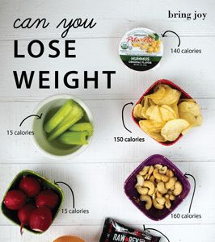

Simple Ways to Start Losing Weight Immediately, According to Science | Eat This Not That
 Toggle navigation News Healthy Eating Groceries Weight Loss Restaurants Recipes Mind+Body ETNT Health News Weight Loss Healthy Eating Recipes Restaurants Groceries Mind+Body ETNT Health COVID Videos The Books The Newsletter The Podcast The Books The Newsletter The Podcast Skip to content Weight Loss Evidence-Based ×This content references scientific studies and academic research, and is fact-checked to ensure accuracy.
Our team of licensed nutritionists and dietitians strives to be objective, unbiased, and honest.
We are committed to bringing you researched, expert-driven content to help you make more informed decisions around food, health, and wellness. We know how important making choices about your overall health is, and we strive to provide you with the best information possible.
Simple Ways to Start Losing Weight Immediately, According to Science
Try these uncomplicated tips and you re all but guaranteed to see the results you want. By Eat This, Not That! Editors November 12, 2020 Share on Facebook Share on Twitter Share on Pinterest Share via e-mail Share on Facebook Share on Twitter Share on Pinterest Share via e-mailIn some cases, losing weight can feel like swimming in a cold pool: The biggest challenge may be simply stepping in. And given the sheer volume of available tips and weight loss programs at your fingertips these days—after all, weight loss is more than a $70 billion per year industry—it's entirely reasonable for you to be ready to take the plunge but don't even know where to begin.
We're here to help. If you're ready to finally drop a few pounds, know that you can start by implementing these seven incredibly simple and ultimately effective ways to start losing weight immediately—all according to the latest scientific reports. Best of all: None of these tips require you to adopt a complicated weight loss plan. Commit to them, and you're bound to see results in very short order. Read on to learn what they are, and for more amazing weight loss tips, check out these Sneaky Weight Loss Tricks That Totally Work .
1Start Your Day Guzzling Water
ShutterstockFact: Drinking enough water is crucial to for unleashing the full power of your metabolism. According to a study published in The Journal of Clinical Endocrinology and Metabolism , after drinking approximately 17 ounces of water (about two tall glasses), participants' metabolic rates increased by 30 percent. The researchers estimate that increasing water intake just six cups a day will burn an extra 17,400 calories per year—a weight loss of five pounds.
2Stop Making Your Healthy Food Unhealthy
Eat This, Not That!It's great to tuck into a healthy salad filled with great leafy greens and muscle-building, flubber-frying protein. But don't be that person who eats a salad that makes them gain weight—and that means avoiding any salad dressings high in sodium, calories, and even trans fats.
For instance, take Girard's Champagne 60-Calorie Vinaigrette. Sounds healthy, right? Wrong. A single serving of the stuff has nearly one-fourth of your daily sodium intake, assuming you're abstemious enough to stick to just two tablespoons. Excess salt intake is linked to elevated blood pressure, a higher risk of heart disease, and sabotaged weight-loss goals. Avoid creamy and unhealthy salad dressings to ensure that you're on track for weight loss. For more dressings to avoid, see this list of Salad Dressings Worse for You than Chocolate Syrup .
3Have Some Green Tea
Monika Grabkowska/UnsplashA study published in The American Journal of Clinical Nutrition found that along with caffeine, the catechin compounds in green tea increased healthy brown fat among the study participants. And the more calorie-burning brown fat an adult has, the better.
The most effective catechin in green tea is the compound EGCG. In addition to jumpstarting your metabolism and aiding in the breaking down of fat, EGCG can also impede the formation of new fat cells. One study found that men who drank green tea containing 136 milligrams of EGCG lost twice as much weight than a placebo group and four times as much belly fat over the course of three months.
4Eat More Deliberately
Shutterstock"It turns out that most people eat really quickly and very few chew their food properly," Norma Lowe, M.A., NASM, C.P.T., a certified sports nutritionist and fitness coach based in New York City, told us recently. "Far too many people eat so quickly that they don't realize how full they are and end up overeating."
According to a study published last year in the journal Nutrients , eating your food at a much slower rate has a direct impact on your hunger levels. Study participants who ate their meals at slower speeds reported being fuller and with a reduced appetite afterward. Taking your time chewing may also boost your body's ability to burn off the calories and activate its natural defenses. One study published in Obesity found that the more you chew while eating your meal, the more activated your metabolism will be, as participants could expect to burn an extra 10 calories per 300-calorie meal.
5Consider the Treadmill
ShutterstockMovement is key to keeping your body's inner fat-furnace firing—and we recommend you adopt any moderate-to-intense exercise plan that you'll enjoy and stick to—but if you're determined to lose weight, data from Harvard University says that hopping on the treadmill is the most efficient and affordable calorie burn you can do. If you weigh 182 pounds, a half-hour on treadmill at 7.5 mph will result in 465 calories burned.
6Eat More Whole Foods—Period
ShutterstockIt may not be what you want to hear, but it's simply a fact: Eating whole, unprocessed foods—basic fruits, vegetables, and grains that are packed with the best nutrients and all of the great fiber to regulate your hormone levels—is one of the surest ways to take control of your weight. Additionally, countless studies concur that eating the rainbow of veggies and fruits can help you stay healthier and even fight off disease. If weight loss is your goal, start by filling your shopping cart with these 20 Incredibly Filling Fruits and Vegetables.
7Cut the Soda and Booze
ShutterstockLet's face it: Doing this alone may result in weight loss. At 150 calories per can—and filled with toxic sugars and "natural" flavors—drinking a carbonated soda is one of the unhealthiest things you can do regularly. Switching to "diet" sodas won't help. "Even though diet drinks are calorie-free, they cause insulin to be released in your gut because their artificial sweeteners are sweet like sugar, and that actually prevents weight loss," Miriam Jacobson, RD, CDN, told us.
In the case of alcohol, cutting back makes you instantly healthier in essentially every respect, and weight loss is merely the result. Many cocktails contain as many calories as the typical meal. One study published in the journal Current Obesity Reports linked alcohol consumption with not only weight gain but also full-blown obesity. And for more ways to live a healthier life, make sure you avoid these 101 Unhealthiest Habits on the Planet .
Eat This, Not That! Editors Inspired by The New York Times best-selling book series, Eat This, Not That! is a brand that's comprised of an award-winning team of journalists and board-certified experts, doctors, nutritionists, chefs, personal trainers, and dietitians who work together to bring you accurate, timely, informative, and actionable content on food, nutrition, dieting, weight loss, health, wellness, and more. Read more Filed Under Weight Loss // Weight Loss TipsRead This Next
Weight LossThis Super Popular Weight Loss Trick Won’t Work
The downside of time-restricted eating.
Weight LossStudy Reveals Your Weight Loss Secret Weapon
Do online weight loss programs actually work?
Weight LossThe #1 Pantry Food for Weight Loss
This healthy food makes it easier to drop pounds.
More in Weight LossThis Is the Best Coffee for Weight Loss, Says an Expert
The #1 Best Supplement for Weight Loss
One Major Effect Coffee Has on Your Metabolism
One Surprising Side Effect of Intermittent Fasting
Tiffany Haddish Opens Up About Recent Weight Loss
Facebook Twitter Instagram Pinterest About Us About ETNT Health Our Medical Expert Board Newsletters Partner Sites Privacy Policy Terms and Conditions Advertise FAQ Contact UsSubscribe to our daily newsletter
Get the best food tips and diet advice every day.© 2020 Galvanized Media . All Rights Reserved. EatThis.com is part of the AllRecipes Food Group